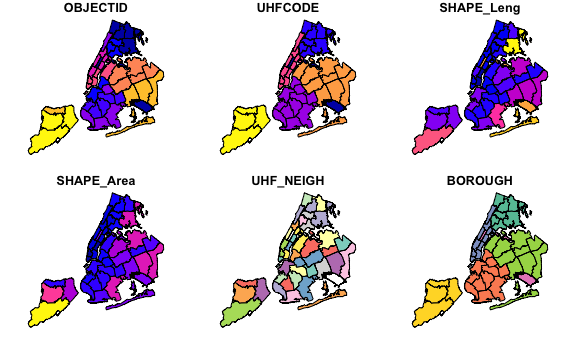
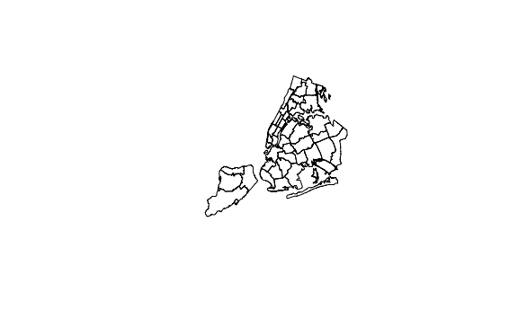
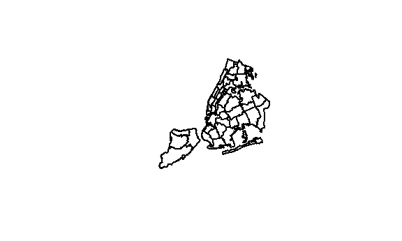

priyanka
pests_home = read_csv(file = "./final_data/mold_home.csv") %>%
janitor::clean_names()
air_conc = read_csv(file = "./final_data/air_conc.csv") %>%
janitor::clean_names()
mice_home = read_csv(file = "./final_data/mice_home.csv") %>%
janitor::clean_names()Reading JSON file for UHF geo
uhf <- jsonlite::fromJSON("./final_data/UHF42.json", flatten = TRUE)Conclusion: the JSON file is weird, will try shape file before spending more time figuring out JSON.
Shape files
Shape files turned out better. Used a different file from nyc.gov because the Env & Health Data Portal file was inconsistent - combined certain neighborhoods that weren’t combined in the rest of the datasets.
shape = st_read("./final_data/shapefiles/", quiet = TRUE)
#look at what we have
str(shape)## Classes 'sf' and 'data.frame': 43 obs. of 7 variables:
## $ OBJECTID : int 1 2 3 4 5 6 7 8 9 10 ...
## $ UHFCODE : num 0 101 102 103 104 105 106 107 201 202 ...
## $ SHAPE_Leng: num 207588 57699 88219 59712 250903 ...
## $ SHAPE_Area: num 2.76e+08 1.33e+08 1.81e+08 1.41e+08 3.87e+08 ...
## $ UHF_NEIGH : Factor w/ 42 levels "Bayside - Little Neck",..: NA 23 26 15 27 9 20 21 18 10 ...
## $ BOROUGH : Factor w/ 6 levels "Bronx","Brooklyn",..: 4 1 1 1 1 1 1 1 2 2 ...
## $ geometry :sfc_MULTIPOLYGON of length 43; first list element: List of 7
## ..$ :List of 1
## .. ..$ : num [1:8, 1:2] 1052698 1052301 1052316 1052316 1052703 ...
## ..$ :List of 1
## .. ..$ : num [1:6, 1:2] 1054841 1054642 1054641 1054838 1054841 ...
## ..$ :List of 1
## .. ..$ : num [1:935, 1:2] 1033048 1033048 1033086 1033135 1033136 ...
## ..$ :List of 1
## .. ..$ : num [1:40, 1:2] 1013080 1013078 1013217 1013583 1014034 ...
## ..$ :List of 1
## .. ..$ : num [1:346, 1:2] 1019718 1019574 1019492 1019492 1019492 ...
## ..$ :List of 1
## .. ..$ : num [1:44, 1:2] 1010933 1011191 1011150 1010824 1010953 ...
## ..$ :List of 1
## .. ..$ : num [1:173, 1:2] 997406 998203 998217 998310 998252 ...
## ..- attr(*, "class")= chr "XY" "MULTIPOLYGON" "sfg"
## - attr(*, "sf_column")= chr "geometry"
## - attr(*, "agr")= Factor w/ 3 levels "constant","aggregate",..: NA NA NA NA NA NA
## ..- attr(*, "names")= chr "OBJECTID" "UHFCODE" "SHAPE_Leng" "SHAPE_Area" ...#plot all polygon boundaries
plot(shape)
#plot just geometry column
plot(st_geometry(shape))
Checking the shape tibble, it looks like the values we need are stored properly. Merged with one of our datasets below; we can change out the air_conc dataset with our final tidied data as long as the geo_entity_id is still there.
merged <- merge(shape, air_conc, by.x = "UHFCODE", by.y = "geo_entity_id")Plots with merged dataset: Geometry plot still works.
#look at geometry plot
plot(st_geometry(merged))
I’ll try a random variable, ozone, which is coded as 386 under indicator_id:
ozone = merged %>%
filter(indicator_id == 386)
plot(ozone["data_value"])